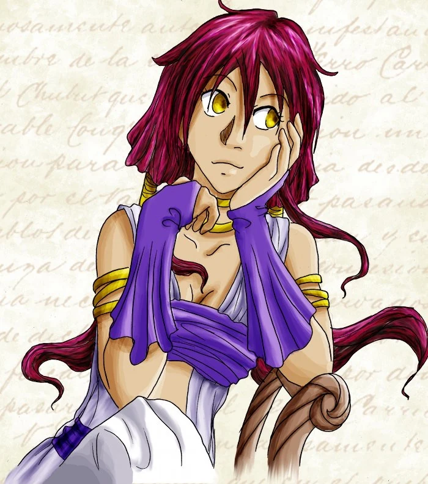
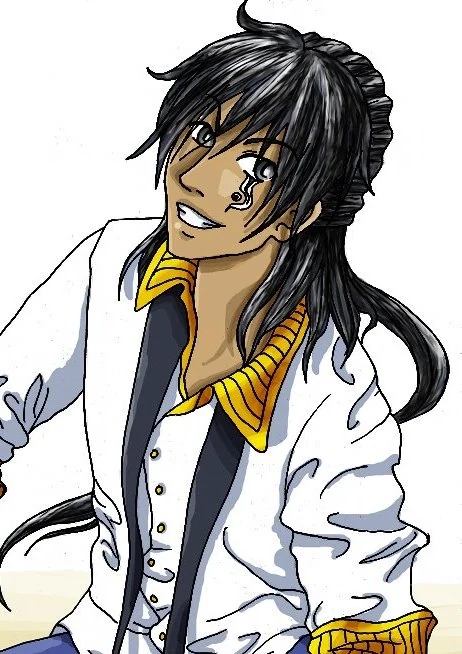
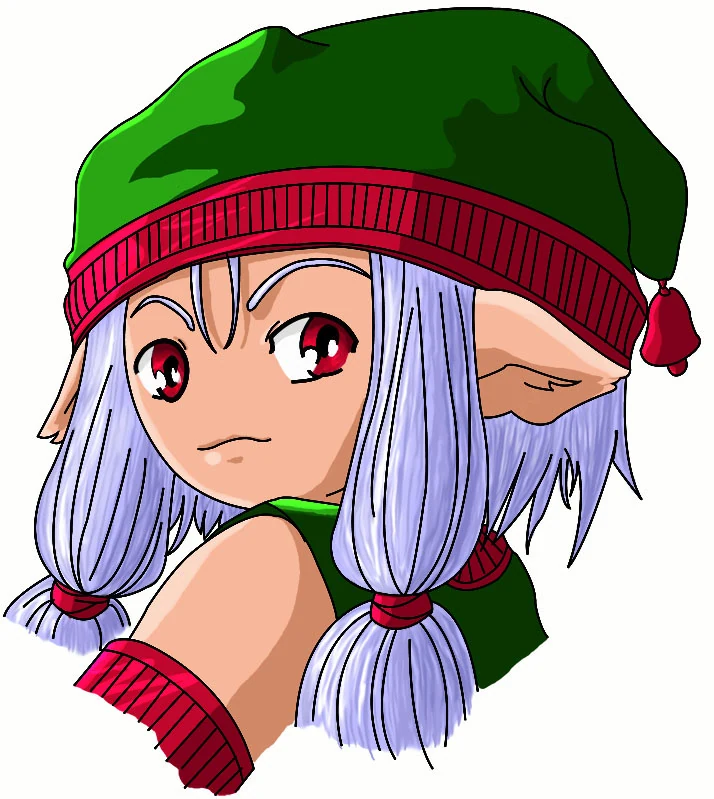
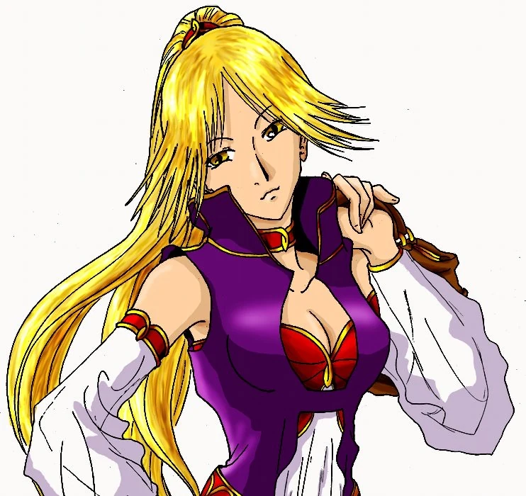
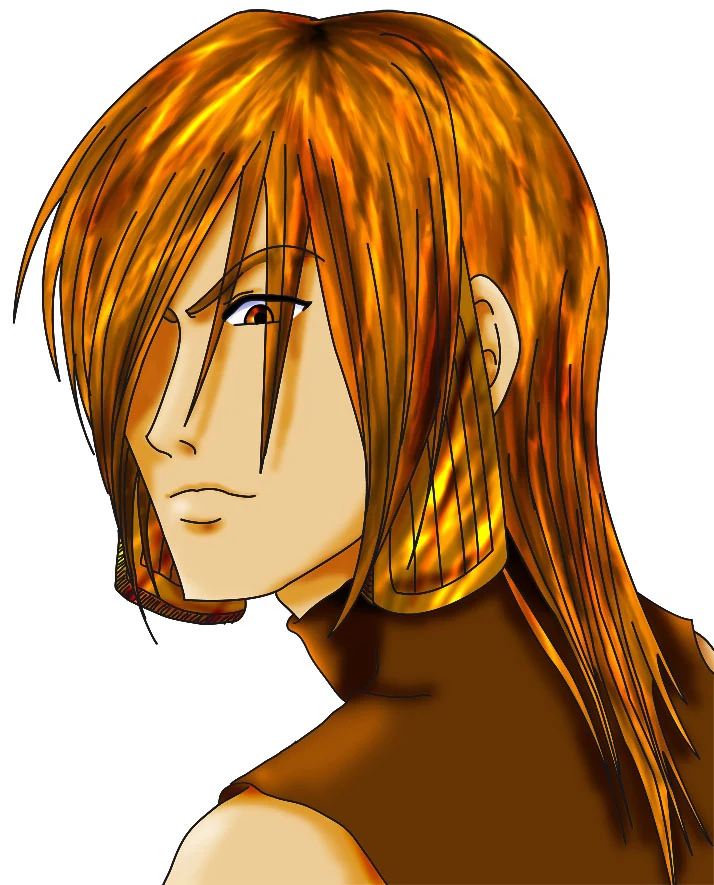

Aelysse

Nom : Aelysse Dirsanne
Âge : 18 ans
Statut : Célibataire
Signe : Scorpion
Race : Sang-mêlée
Groupe : 0+
Job : Etudiante
Hobbies : dessiner, lire des romans d'héroic fantasy, écrire des romans
Aime : les desserts, les livres, ses amis
Déteste : les araignées, les yogurts au muesli, les gens qui roulent trop vite
Physique : cheveux auburn, yeux dorés, petite, fine
Caractère : Au début : timide, polie, introvertie A la fin : gaie, exubérante, moqueuse, extravertie
Andarane

Nom : Andarane
Âge : 28 ans
Statut : Célibataire
Signe : Verseau
Race : Elendais
Groupe : 0+
Job : Acteur
Hobbies : Faire la cuisine, méditation, visiter les musées, la couture, le ménage
Aime : Les bons repas, gagner dans les jeux
Déteste : la saleté, le désordre, les insectes
Physique : Cheveux noirs, yeux gris, grand, musclé avec un tatouage sous l’œil droit
Caractère : Sarcastique, courageux, combattif, idéaliste, fidèle
Wambas

Nom : Wambas De Landswitzer
Âge : 67 ans
Statut : Célibataire
Signe : Poisson
Race : Nelfe
Groupe : AB+
Job : Contrôleur
Hobbies : Faire du thé, cueillir des fleurs
Aime : boire du thé, faire des compositions florales, les chapeaux
Déteste : Manquer à son devoir, le lait dans le thé, les coups de soleil
Physique : Cheveux bleus, yeux rouge, petit avec des ailes rétractable
Caractère : Prévenant, moqueur, sarcastique, gentil, doux
Elia

Nom : Elia Lériéva
Âge : 18 ans
Statut : Célibataire
Signe : Gémeaux
Race : Sang-mêlée
Groupe : B-
Job : Etudiante
Hobbies : l'Escrime, la mode, faire la fête
Aime : Le confort, le rose, la nourriture salée
Déteste : L'eau, perdre, la solitude, la musique traditionnelle
Physique : Cheveux blonds, yeux dorés, grande, élancée, athlétique
Caractère : Sûr d'elle, volontaire, forte, capricieuse, a l'habitude d'avoir ce qu'elle veut
Kergass

Nom : Kergass Dreana
Âge : 18 ans
Statut : Célibataire
Signe : Cancer
Race : Sang-mêlé
Groupe : A+
Job : Etudiant
Hobbies : Lancer de couteaux, lire de la poésie, la moto
Aime : Le fromage, l'innocence, s'isoler dans la nature, son frère
Déteste : Son père, les rêves et l'espoir, les lâches
Physique : Cheveux oranges, yeux dorés, grand, très costaud
Caractère : Déterminé, sombre, désespéré, calculateur, incisif, intelligent